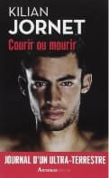
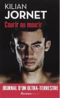

Courir ou mourir
Courir ou mourir de Kilian JORNET est un récit d’aventure. Il raconte ses exploits au travers de ses pensées. Un récit du plus grand coureur en montagne du monde.
L’objectif de « Courir » est de partager une vision de la course à pied sous plus ou moins toutes ces formes. J’ai choisi le livre Courir ou mourir de Kilian JORNET, coureur en montagne. Et le film 42,195 km ou la folie marathon de Pierre MATHIOTE. Ces deux éléments parlent de course à pied pratiquer de différente manière.
Courir ou mourir de Kilian JORNET est un récit d’aventure. Il raconte ses exploits au travers de ses pensées. Un récit du plus grand coureur en montagne du monde.
La course à pied se décline en différentes pratiques. C’est un sport que l’on peut exercer n’importe où avec seulement une paire de chaussures.

42,195 km ou la folie marathon de Pierre MATHIOTE est un documentaire. Réalisé en 2011, il suit le parcours de coureurs du marathon de la Rochelle.